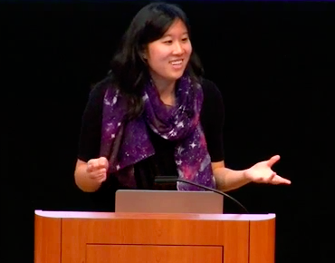
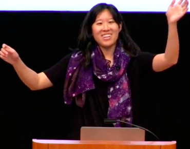
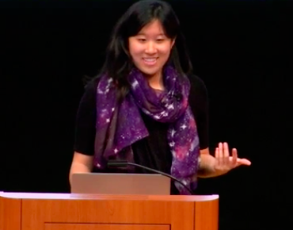
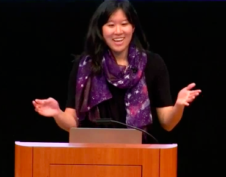

Philosophy
Come back soon to learn about my teaching philosophy!
Experience
Pedagogy for First-Time GSIs
I am an instructor for the Astronomy Department's pedagogy course. This course is a requirement for all first-time GSIs and emphasizes the discussion and practice of teaching techniques, as applied to physics and astronomy. The class aims to pass on practical, pedagogical resources that are useful for graduate student instructors (GSIs) in both the short term (i.e. leading discussion sections) and long term (i.e. careers as professional teachers). The most recent syllabus for this class contains additional information about topics covered, useful teaching tips, and relevant links and resources.
Introduction to General Astronomy
I have been a GSI for the large, non-majors introduction to astronomy course for three semesters (F13,S14,S15), including being head-GSI (S15). I have a lot of fun teaching this class, especially in developing creative lesson plans, interacting with a diverse room of students, and sharing my love for astronomy with undergraduates who may have never been exposed to the subject before.
As head-GSI for instructor Alex Filippenko, I was responsible for 13 GSIs and 800+ students, a role that exposed me to the great fun, hard work, and nuances of running a large class. I even got to deliver a couple lectures!
   Professional Development
- UC Berkeley Certificate in Teaching and Learning in Higher Education: in progress
- CIRTL Massive Open Online Course An Introduction to Evidence-Based Undergraduate STEM Teaching: completed Fall, 2016
- UC Berkeley Instructional Techniques for First-Time GSIs (Astronomy Dept): completed Fall, 2013